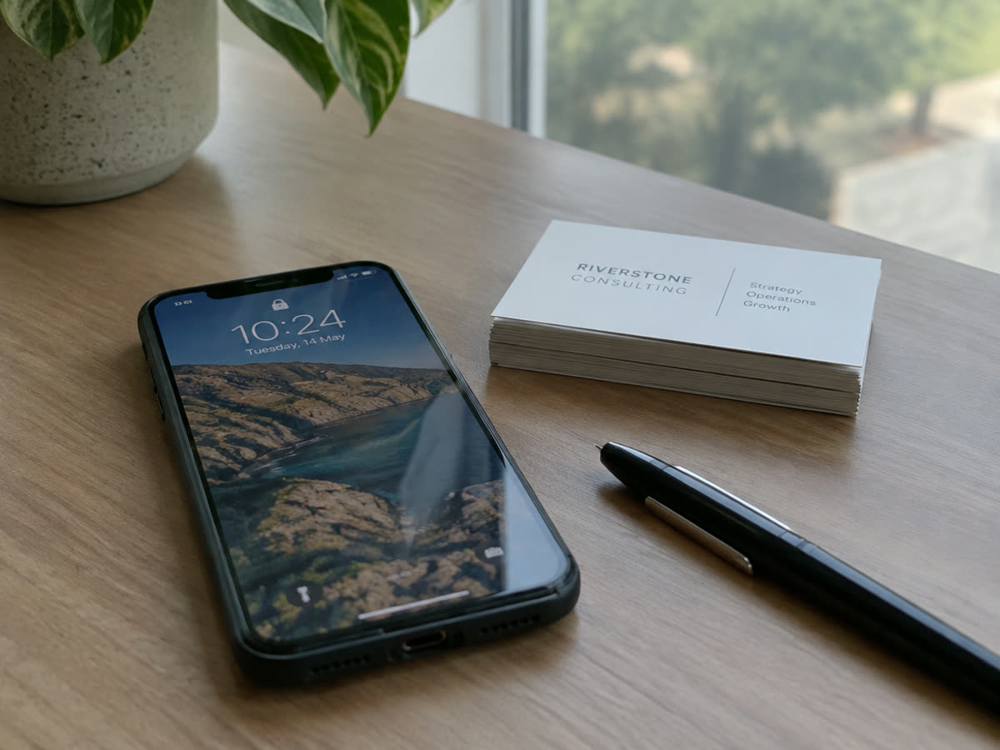

Das Instagram-Profil als Visitenkarte einrichten
Wenn ein Reel läuft, sehen sich Leute das Profil an. Was dort steht, entscheidet, ob daraus eine Anfrage wird.
Wenn ein Reel läuft, passiert als Nächstes immer dasselbe: Ein Teil der Zuschauer tippt auf den Kontonamen und sieht sich das Profil an. Was dort steht, entscheidet darüber, ob aus Aufmerksamkeit eine Anfrage wird. Dieser Schritt wird fast überall vernachlässigt, obwohl er einmalig eine halbe Stunde kostet.

Der Name, unter dem Sie gefunden werden
Instagram durchsucht zwei Felder: den Benutzernamen und den Anzeigenamen. Der Anzeigename ist das größere Geschenk, weil dort nicht nur die Firma stehen muss.
"Maler Schmid" findet nur, wer den Namen kennt. "Maler Schmid | Göppingen" wird auch gefunden, wenn jemand nach einem Maler in Göppingen sucht. Leistung und Ort gehören in dieses Feld, und zwar so, wie Menschen tatsächlich suchen.
Die Profilbeschreibung
Sie haben rund 150 Zeichen. Das reicht für drei Dinge: was Sie machen, für wen, und was der nächste Schritt ist.
Was dort nicht hingehört, sind Floskeln. "Qualität seit 1987", "Ihr Partner rund ums Bad", "Leidenschaft für Handwerk" sagen nichts, was ein anderer Betrieb nicht genauso schreiben könnte. Schreiben Sie stattdessen konkret: welche Leistungen, welcher Umkreis, ob gerade jemand gesucht wird.
Ein Satz zum Angebot darf hinein, wenn es eines gibt. Wer etwa einen kostenlosen ersten Termin anbietet, sollte das dort auch stehen haben.

Der eine Link
Sie haben genau einen Link. Er sollte nicht auf die Startseite zeigen, sondern auf die Seite, die zu dem passt, was die Leute gerade gesehen haben. Wer über ein Badsanierungsvideo kommt, will nicht auf einer allgemeinen Übersicht landen.
Noch wichtiger: Der Weg zur Kontaktaufnahme muss kurz sein. Jeder zusätzliche Klick kostet spürbar Anfragen. Am besten führt der Link direkt dorthin, wo Telefonnummer und Mailadresse stehen.
Titelbilder und die ersten neun Felder
Das Profilraster zeigt von jedem Reel ein Standbild. Standardmäßig ist das irgendein Einzelbild aus dem Video, oft eine unscharfe Bewegung. Ein bewusst gewähltes Titelbild mit zwei, drei Wörtern darauf macht das Profil auf einen Blick lesbar.
Das muss nicht aufwendig sein. Wichtig ist nur, dass jemand in zwei Sekunden erkennt, worum es bei Ihnen geht, ohne ein einziges Video zu öffnen. Wie wir das anlegen, steht unter Profil und Plan.
Geschäftskonto und Kontaktmöglichkeiten
Stellen Sie das Profil auf ein Geschäftskonto um, falls das noch nicht geschehen ist. Es kostet nichts, dauert zwei Minuten und schaltet zwei Dinge frei: Schaltflächen für Anruf und E-Mail direkt im Profil und die Statistiken, in denen Sie sehen, wie Videos tatsächlich laufen.
Ohne diese Statistiken arbeiten Sie im Blindflug. Welche Zahlen darin etwas aussagen und welche nicht, steht unter Welche Zahlen wirklich zählen.
Was danach zu tun ist
Nichts mehr, eine Weile lang. Das Profil ist eingerichtet, der Rest entscheidet sich über die Videos. Der häufigste Fehler an dieser Stelle ist, monatelang an Beschreibung und Titelbildern zu feilen, statt zu veröffentlichen.
Sehen Sie das Profil nach drei Monaten noch einmal an, wenn Sie wissen, welche Videos bei Ihnen funktionieren. Dann wissen Sie auch, was in der Beschreibung stehen sollte.


Lernen wir uns kennen.
15 Minuten am Telefon oder per Video. Danach wissen Sie, ob und wie Social Media für Ihren Betrieb funktioniert.